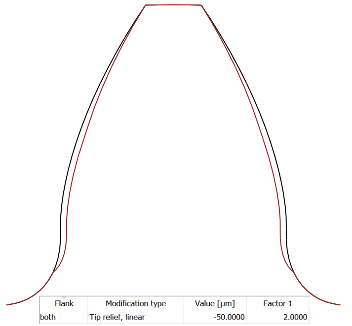

|
|
|


齿廓修形
齿廓修形是相对渐开线的偏差，称为高度修形。以下各节详细介绍了您可以在 KISSsoft 中进行的所有可能齿廓修形。
注释 1：
在定义高度修形之前，您必须首先输入长度系数 LCa*。长度系数是滚动长度 Ly (从修形起点到齿顶成形圆或齿根成形圆) 除以法向模数：LCa* = (LdFa - LdC)/mn 或 L = (LdC - LdFf)/mn。滚动长度 Ly 按照 ISO 21771 公式 17 或 DIN 3960 公式 3.3.07 计算。
理论直径 da 或 dFa 始终用于计算齿顶处修形的起点。
注释 2：
直接在齿顶圆上测量齿顶修形 Ca 可能不准确。如果已定义齿顶修形，报告会在称为 dcheck 的特殊测量圆上说明齿顶修形，用于测量目的。
测量圆 dcheck = dFa.i - 0.02·mn。
注释 3：
与齿顶修形一样，在特殊情况下，不同的齿廓修形也可以用负的 Ca 参数来预先定义。由于磨削过程总是去除材料，负齿顶修形会导致齿形中齿根以恒定速率去除材料（根据 Ca）。在预先定义的修形长度范围内，去除的材料量减少，以便在齿顶处为零（参见 图 15.36）。

图 15.36：具有负 Ca 参数的齿廓修形
Profile modifications
Profile modifications are deviations from the involute, known as height modifications. The sections that follow detail the possible profile modifications you can make in KISSsoft.
Note 1:
Before you can define height modifications, you must first input the length factor LCa*. The length factor is the roll length Ly (from the start of the modification to the tip form circle or root form circle) divided by the normal module: LCa* = (LdFa - LdC)/mn or L = (LdC - LdFf)/mn. The roll length Ly is calculated according to ISO 21771, Equation 17, or DIN 3960, Equation 3.3.07.
The theoretical diameter da or dFa is always used to calculate the start of the modification at the tip.
Note 2:
Measuring tip relief Ca directly on the tip circle may be inaccurate. If tip reliefs have been defined, the report states the tip relief on a special measuring circle called dcheck, for measuring purposes.
Measuring circle dcheck = dFa.i - 0.02·mn.
Note 3:
Like tip reliefs, different profile modifications can also be predefined with negative Ca parameters in exceptional circumstances. As the grinding process always removes material, a negative tip relief results in a tooth form where the tooth root removes material at a constant rate (according to Ca). In the predefined modification length range, the amount of material removed is reduced so that it is zero at the tip ((see Figure 15.36).
Figure 15.36: Profile modification with negative Ca parameters